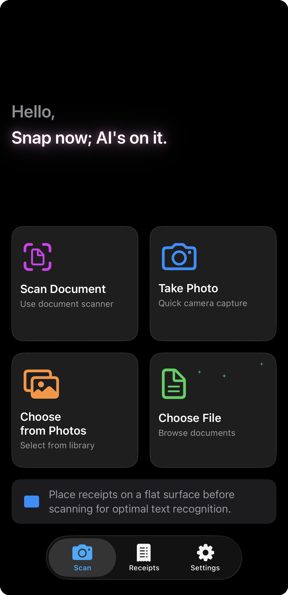
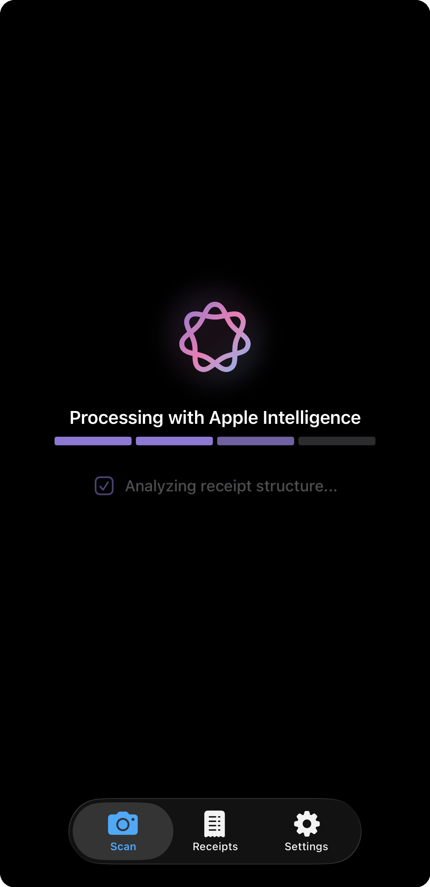
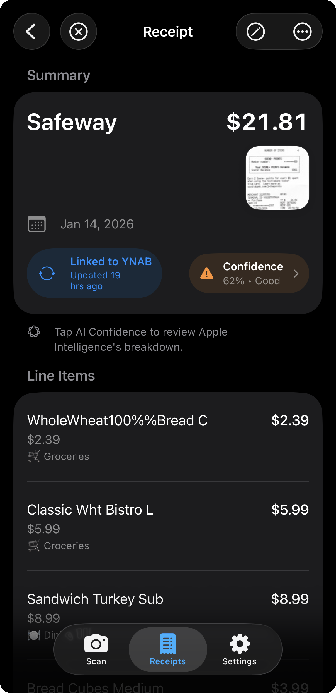

Receipts in.
Line items out.
Scan a receipt and Apple Intelligence extracts every item on your iPhone. Keep it locally, or sync it to YNAB split across your categories.

Scan. Camera, library, or document scanner.

Extract. Apple Intelligence reads it on-device.

Save or sync. Keep it in the vault, or send it to YNAB.
Pricing
14-day free trial on paid plans. AI Scanning needs Apple Intelligence (iPhone 15 Pro+ or iPad with M1/A17 Pro). No ads. Cancel anytime from your Apple ID settings. A YNAB subscription is required separately to sync receipts.
FAQ
No. When you sync a receipt, it automatically matches with existing bank imports in YNAB. Your receipt's detailed line items replace the vague bank description — no duplicates.
Both approaches work — it's a matter of preference. YNAB's built-in attachments are convenient if you want everything stored together in YNAB. Receipts for YNAB is for people who'd rather keep their receipt images on their iPhone and just leave a small reference code in the transaction memo. You still get one-tap access from YNAB back to the receipt; the image just never leaves your device.
Yes, an active YNAB subscription is required to sync receipts. You can scan and store locally without YNAB.
iPhone and iPad running iOS 26 or iPadOS 26. AI scanning requires Apple Intelligence — iPhone 15 Pro or newer, iPad Pro (M1+), iPad Air (M1+), or iPad mini (A17 Pro). Other devices can use manual entry.
Never. All processing happens on your device using Apple Intelligence. We don't operate any servers that collect your data.
Only transaction details (merchant, date, amount, category) when you explicitly sync, plus a short reference code in the transaction memo so you can find the receipt later — that's a 14-digit timestamp, not personal data. Never your receipt images.
Receipt scanning works completely offline. An internet connection is only needed to sync to YNAB.
The app extracts line items, not tax directly. When syncing to YNAB, it calculates the difference between the total and item sum, creating a separate "Tax/Fees/Rounding" line automatically.
Receipts for YNAB is available in the US, UK, Canada, Australia, New Zealand, Philippines, Singapore, India, Ireland, and South Africa. We're working on expanding to more regions!
No. Receipts for YNAB is an independent app by eTurea. We are not affiliated with or endorsed by YNAB.